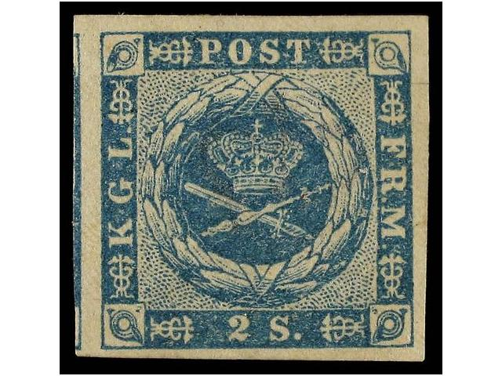
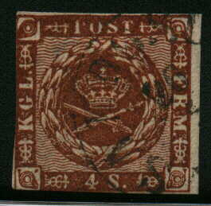
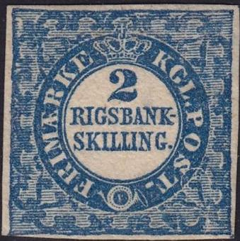
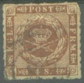
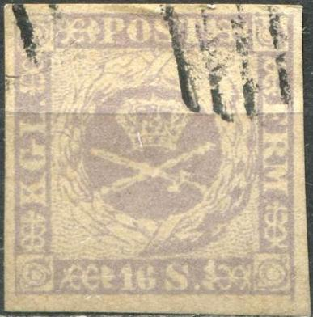
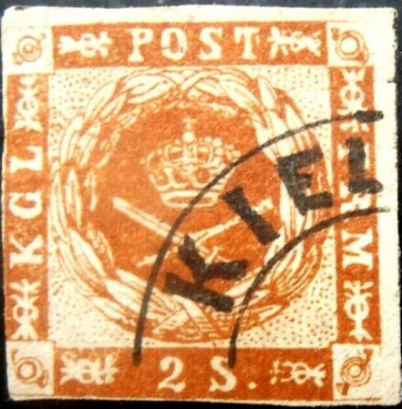
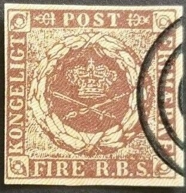
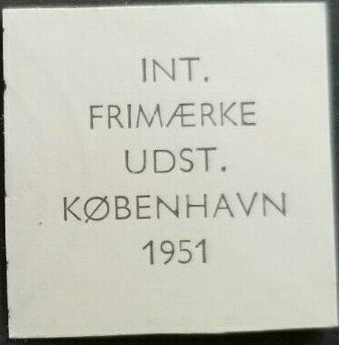

{kind=link}
{kind=link}


{kind=link}



Return To Catalogue - Denmark 1851 Rigsbank Skilling stamp - Denmark 1882-1920 - Miscellaneous - Danish West Indies - Bypost (local post) - Denmark Railway Stamps, overview
Curreny 96 Skilling = 1 Rigsbankdaler, after 1875 100 Øre = 1 Krone
Capital Kopenhagen
Note: on my website many of the
pictures can not be seen! They are of course present in the
catalogue;
contact me if you want to purchase it.

Denmark 1851 Rigsbank Skilling stamp
2 s (1854) blue FIRE R.B.S. brown (different shades of brown) 4 s brown (different shades of brown) 8 s green 16 s lilac
These stamps have a wavy yellow or brown underprint.
Value of the stamps |
|||
vc = very common c = common * = not so common ** = uncommon |
*** = very uncommon R = rare RR = very rare RRR = extremely rare |
||
| Value | Unused | Used | Remarks |
| Imperforate | |||
| 2 s | *** | ** | |
| 4 R.B.S | RR | * | |
| 4 s | *** | c | Two types: type 1: dots in corners type 2: wavy lines in corners (1857) |
| 8 s | *** | *** | Two types: type 1: dots in corners type 2: wavy lines in corners (1857) |
| 16 s | R | *** | |
| Rouletted | |||
| 4 s | *** | * | 1863 |
| 16 s | RR | RR | 1863 |
Similar stamps with value in "CENTS" were issued for Danish West Indies.
These stamps should have a watermark (small crown). But caution! There exist also forgeries with watermark! Genuine stamp with watermark:
Typical numeral cancels:

"2" numeral cancel of Hamburg.
More information on numeral cancels can be found in: 'Denmark Numeral Cancels, European Philately 8, J.Barefoot 1983'.

(I've been told that this numeral cancel '3' was used in Lubeck,
Germany)
Other numeral cancels:
1: Copenhagen
2: Hamburg (K.D.O.P.A Hamburg)
3: Lubeck
4: Aarborg
5: Aarhus
8: Bogrense
10: Burg
11: Cappeln
14: Eckernforde
15: Faaborg
16: Flensburg
19: Frederikshavn
23: Haderslev
26: Holstebro
28: Holbaek
29: Holstebro
30: Horsens
31: Husum
33: Kerteminde
34: Kbh Jernbane
35: Koge
36: Kolding
37: Korsor
40: Logstor
41: Maribo
42: Middlefart
43: Nakskov
45: Nide
47: Nyborg (Fredericia?)
50: Nysted
51: Odense
53: Randers
54: Rendsburg
55: Ribe
56: Ringkobling
57: Ringsted
58: Roskilde
60: Rodby
61: Ronne
63: Skanderborg
65: Slagelse
68: Stege
70: Svenborg
72: Thisted
73: Tonder
74: Tönning
76: Vejle
77: Viborg
86: Sjaell
90: Ronnede
92: Skaelskor
96: Allinge
97: Augustenborg
98: Fjerritslev
101: Graasten
104: Nekso
106: Skagen
113: Altona
115: Eutin
116: Gluckstadt
117: Heide
118: Heiligenhafen
119: Iltzehoe
120: Kellinghusen
121: Kiel
122: Lutjenburg
123: Meldorf
124: Neumunster
132: Remmels
133: Segeberg
134: Utersen
137: Barmstedt
138: Bornhöved
139: Bramstedt
140: Brunsbüttel
146: Wandsbeck
147: Wilster
149: Molln
150: Ratzeburg
154: Blankenese
168: Holstenske Jernbane (railway cancel)
170: Holstein Eisenbahn (railway cancel)
172: Marne
176: Ringsted
181: Kopenhagen Railway cancel
182: Arneas
188: Dampsk.No 5 (shipcancel)
189: Dampsk.No 3 (shipcancel)
193: Schl. Eisenbahn (railway cancel?)
204: Christianholm
206: Elsmhorn-Itzehoe
273: Nordfyenske Jernbane (railway company)
274: Nordfyenske Jernbane (railway company)
Rouletted stamps were issued in 1863, some none official perforations also exist, examples:


Reprints of most of these stamps exist (no watermark). If anybody posesses information about these reprints, please contact me! I've been told that the next stamps are reprints:

These reprints appear to have no watermark.
I've been told that the next two stamps of 16 s are reprints made in 1885:
(Reprints of 1884, reduced sizes)

Two reprints or proofs with no text printed at the back

Reprint from 1951, inscription "COLOUR SPECIMEN 1951"
at the back

Reprint from 1961, inscription "FARVE NYTRYK 1961" at
the back
Reprints with "HAFNIA 75 NYTRYCK" printed at the back.
Forgery of the 2 s stamp:
Two forgeries of the 16 s stamp:


(Forgeries of the 16 s value, note the lettering and the size of
the ornaments at the bottom)



Spiro forgeries, note the extension at the bottom right corner in
the 16 s forgeries.
Three forgeries of the 8 s stamp:



A forgery of the 2 s in the wrong colour green and a 2 s brown,
both with a partial "KIEL" cancel.


Three other primitive forgeries.
Some reprints "NYTRYK" made for the 'Hafnia 76' of the
4 s value

Modern reproduction for the Salon der Philatelie in Hamburg in
1984.
Reprints made in 1951 for the International Frimaerke Udstilling
in Kopenhagen.
 
Cut from this 1951 sheetlet, on the back of this reprint is
written "INT. FRIMAERKE UDST. KOBENHAVN 1951"
For stamps of Denmark from 1882 to 1920, click here.
Dampskibsselkab = steamship company
Forfalskning = forgery
Frimaerke = stamp
Godsfrimaerke = parcel stamp
Nytryck = reprint
Rutebilmaerke = bus stamp
{kind=link}
{kind=link}
{kind=link}
{kind=link}